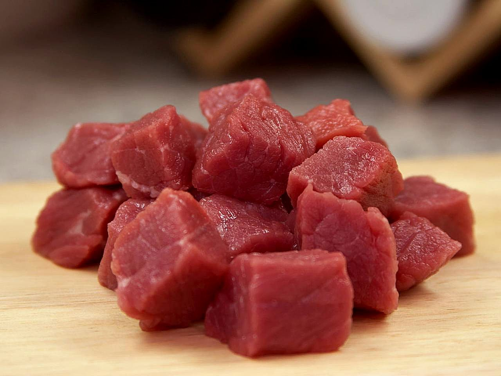
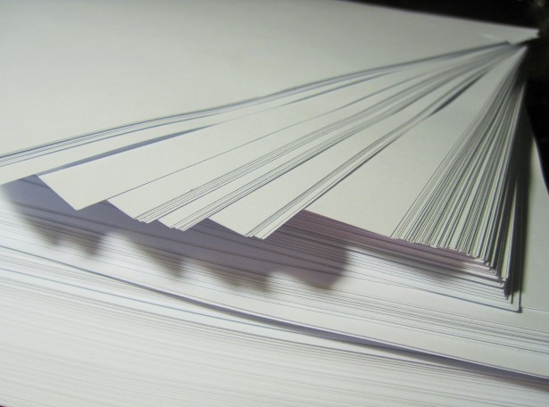
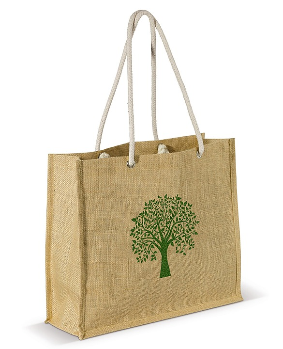
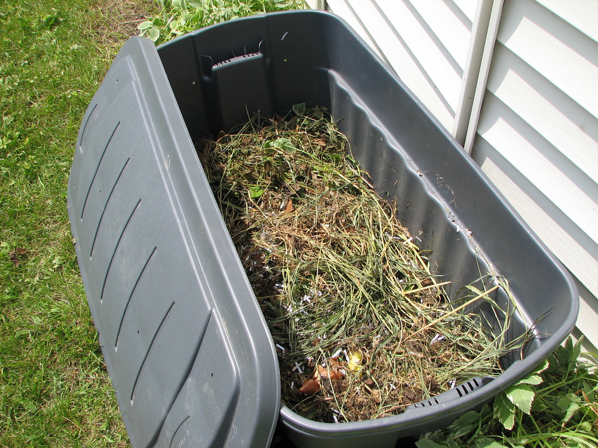

Recycling Otago
Recycling Otago

How can I be more enviromentally friendly?
There are many things we do in our day to day lives have a drastic effect on the enviroment, simply being aware of these
and making small changes can make a huge difference.
Some ideas are:
Some ideas are:
1. Eat Less Meat.
 Believe it or not, cutting back on your consumption of meat can make a huge difference in the environment. More than 30 percent of the Earth’s surface is being used to raise and support livestock. According to a United Nations study, “the livestock sector accounts for 9 percent of CO2 deriving from human-related activities, but produces a much larger share of even more harmful greenhouse gases. It generates 65 percent of human-related nitrous oxide, which has 296 times the Global Warming Potential (GWP) of CO2.” Cutting back on your meat consumption is an important step in reducing the overall emission of GWP gases. Less livestock also means more land we can enjoy and use for recreation. Consider replacing some of your meat-heavy meals with vegetables or eating more seafood!2. Use Paper Less and Recycle More.
 The world we live in today is much more reliant on computers and digital technology. It is easy to go a day without using a notebook or even a piece of paper. The less paper you use, the less paper needs to be produced and the more trees that get to fill our forests. By recycling one short ton (0.91 t) of paper you can save 17 mature trees, according to the EPA. If it is essential for you to use paper at your job or at school, you can still make a difference by recycling the paper you do use. Today, more than 40 percent of municipal solid waste is paper and paper products. It takes less energy to create paper through recycled and used sheets than by creating ‘virgin’ paper. Recycling is easy and one of the best ways to live green.3. Use Canvas Bags Instead of Plastic.
 Most stores offer a canvas bag alternative to their wasteful generic plastic and paper bags. Although a canvas bag might cost a small amount to acquire, they are actually much more useful than you might think. A canvas bag is sturdier than a traditional plastic or paper bag and can hold more goods. A canvas bag can also be used to store items or pack items when moving – making it useful in more than one way. Parents, if you have children that are about to head off to college, investing in a few canvas bags would be a great gift. Your kids might not know it yet, but they will be moving a lot in the next few years and those bags will come in extra handy when they need to bring the books they have been accumulating semester to semester with them. Even if you don’t use canvas bags, reusing plastic bags is a great way to live more eco-friendly. Just use your plastic bags in small garbage cans throughout your home, or recycle your used grocery bag! Every small change can make a huge difference.4. Start A Compost Pile or Bin.
 Compost bins have become a huge trend throughout America in the last few years – and for good reason! Not only do compost bins reduce waste by letting you re-use things you would normally just toss out, but they also save you money and help your plants grow better in your garden! Why go out and buy expensive compost when you could be creating your own with things you are throwing out anyway? If you garden at all, it really doesn’t make any sense NOT having a compost bin. Invest in one or make your own today!